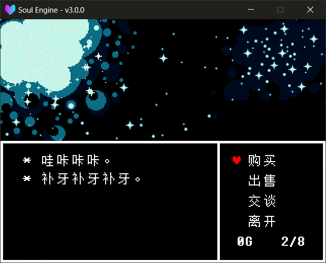

Shop
The Shop is an independent scene, not a page overlaid on the Overworld. When the player walks to the shop door, switch scene into it; when leaving, switch back to DATA.room.
Main module: Scripts/Libraries/Overworld/shop.lua, obtained with ImportFile("Overworld.shop").
Scene: Scripts/Scenes/Overworld/Shops/scene_shop_0.lua, scene name Overworld.Shops.scene_shop_0.
A Complete Shop Scene¶
local scene = {}
local shop = ImportFile("Overworld.shop")
-- what it says on entry, and what it says when choosing "Leave"
shop.SetMainText("* 哇咔咔咔。\n* 补牙补牙补牙。")
shop.SetEndText("* 下次再来哦。")
-- shelf: fill in item ids, names looked up in ITEMS
shop.SetGoods({"CrabApple", "HotCat"})
shop.SetAmount("CrabApple", 4) -- not set (or passed nil) = infinite stock
shop.SetBuyPrice("CrabApple", 7)
shop.SetBuyPrice("HotCat", 18)
-- right-side two columns: shopkeeper's quip + the intro panel that slides up
shop.SetBuyOpinion("CrabApple", "I\nmade\nthis.")
shop.SetIntroduction("CrabApple", "+20 HP")
-- no sell price = half the buy price (HotCat has no sell price set → 9G)
shop.SetSellPrice("CrabApple", 3)
-- rejection line: when an item with sell price 0 is selected, this plays instead of a deal
shop.SetCannotSellText("* 我这里废品已经够多了。") -- whole-shop default
shop.SetCannotSellText("Stick", "* 如果我的店里都是木棍和绷带，\n 那我也不用开商店了。")
-- talk topics: one per line in the list
shop.AddTalk("天气", {"* 今天也一如既往。", "* 明天大概也一样。"})
shop.AddTalk("时间", "* 地下没有白天和黑夜。\n* 所以时间只是个概念。")
shop.SetQueue("天气", "时间") -- bind into one queue, only one shown
-- background
local bg = shop.GetBackground()
bg:Scale(2, 2)
bg:SetAnimation({
"Scene/Waterfall/spr_starpattern_0.png",
"Scene/Waterfall/spr_starpattern_1.png",
}, 0.1)
function scene.update(dt)
shop.Update(dt)
end
function scene.draw()
end
function scene.clear()
shop.Clear()
Layers.clear()
end
return scene
Both lines in scene.clear must be written, and the order cannot be reversed
shop.Clear() does two things: first it sets the _onComplete of the main text box and the opinion column to nil, then ClearModuleTree("Scripts.Libraries.Overworld.shop") unloads the module from the require cache.
The order exists for this reason: Layers.clear() internally calls Typers.ClearAll() first, destroying each typewriter via Destroy(), and Destroy() triggers _onComplete. If shop.Clear() weren't called first, on leaving the shop that callback would re-enter shop logic on a half-dead object.
The module must also be unloaded: on leaving, shop._leaving is set to true, and the first line of shop.Update is if (shop._leaving) then return end. If the module stays in the cache, entering the shop a second time will not respond to input at all.

Interface and State Machine¶
The Shop has four actions, chosen by the player with the Soul:
| Action | Description |
|---|---|
Buy |
Open the shelf; confirm key deducts money at the SetBuyPrice price |
Sell |
Open your own inventory; confirm key adds money at the SetSellPrice price |
Talk |
Open the topic list; confirm key reads that topic |
Exit |
Leave, after saying SetEndText fade out back to DATA.room |
Talk does not show SetMainText
SetMainText is the greeting shown in the bottom text box while idle (cursor on the four buttons).
Talk opens the topic list, and the selected topic's body text borrows that same text box temporarily to display.
After choosing Buy / Sell / Talk, the list occupies the left column (5 rows per page, scrollable), with a red Soul as the cursor.
For Buy / Sell, the right side simultaneously shows the shopkeeper's quip and the intro panel that slides up; for Talk, the right two columns clear.
The three actions block when there's nothing to show, play a line, then return to idle:
| Case | Trigger condition | Line said (localization key) |
|---|---|---|
| Shop buys nothing | SetSellable(false) |
Overworld.Shop.Text.NoSelling |
| Inventory is empty | DATA.player.items is empty |
Overworld.Shop.Text.NoItems |
| No topics | Not a single AddTalk called |
Overworld.Shop.Text.NoTalk |
State Machine¶
IDLE → BUY / SELL / TALK, plus two transient states — they hand the whole screen (and the confirm key) to the main text box:
| State | Description | Where it goes after |
|---|---|---|
IDLE |
Four buttons, cursor is a Soul | — |
BUY / SELL / TALK |
List states | Cancel key returns to IDLE |
MESSAGE |
A blocking line (not enough money, inventory full, topic body, rejection line) | Returns to the state it entered from |
EXITING |
Farewell line on leaving | After speaking, set _leaving, raise the black overlay and switch back to DATA.room |
Why the frame lock exists
Typers.Update runs before scene.update, so "the confirm key that finished reading this line" is read again by shop.Update in the same frame.
Without the lock, the confirm that closes the message would immediately re-open the list. The input_lock in the code exists for this.
Key Bindings¶
| Key | Idle | In list |
|---|---|---|
confirm |
Enter selected action / leave | Deal, read topic, read rejection line |
cancel |
— | Return to idle |
up / down |
Move among the four buttons | Move in the list (scrolls at the bottom) |
Method Reference¶
Text
shop.SetMainText(text)sets the line shown while idle. A string or a string array both work.shop.GetMainText()reads it back (always an array, normalized internally).shop.SetEndText(text)sets the line said on leaving.shop.GetEndText()reads it back. Defaults to localizationOverworld.Shop.Text.Leave.
Shelf and stock
shop.SetGoods(list)replaces the whole shelf.listan array of item id strings, e.g.{"CrabApple", "HotCat"}.- An id not found in
ITEMSis skipped, and[Shop] Unknown item id: xxxis printed. - Names are copied from
ITEMSwhen added to the shelf; changingITEMSafterwards does not affect items already on the shelf.
shop.AddGoods(id)adds one item to the end of the shelf.shop.RemoveGoods(index)removes one by index.shop.GetGoods()reads the shelf back (array of{id, name}).shop.SetAmount(id, amount)sets stock.amountpassednil= infinite stock (default); a number is clamped to>= 0.
shop.GetAmount(id)reads stock, returnsmath.hugewhen infinite.shop.IsSoldOut(id)whether stock is<= 0.- Sold-out items stay on the shelf, but an extra
Overworld.Shop.Text.SoldOut(已售罄) is appended at the line end; selecting it and confirming only plays a sound, no money deducted.
- Sold-out items stay on the shelf, but an extra
Prices
shop.SetBuyPrice(id, price)sets the buy price.shop.GetBuyPrice(id)reads the buy price, returns0if never set.shop.SetSellPrice(id, price)sets the sell price.shop.GetSellPrice(id)reads the sell price. When never set, returns half the buy price (rounded down), not0:
shop.SetBuyPrice("CrabApple", 7) -- SetSellPrice not called
print(shop.GetSellPrice("CrabApple")) -- 3
Sell price 0 = the shop doesn't buy this item
Selecting an item with sell price 0 and confirming will not complete a deal, but plays a rejection line (see below).
This is exactly the laziest way to write "don't buy this": set the sell price to 0 (or simply don't set a buy price either, in which case half of that is also 0).
Note that for an item where SetBuyPrice was never even called, GetSellPrice also computes 0 — an item you forgot to set a buy price for cannot be sold.
Opinion and intro
shop.SetBuyOpinion(id, opinion)sets the quip shown on the right when buying.shop.GetBuyOpinion(id)reads it back, defaults to localizationOverworld.Shop.Opinion.Default(……) when unset.shop.SetSellOpinion(id, opinion)sets the quip when selling.shop.GetSellOpinion(id)reads it back, same default as above.shop.GetOpinion(id)auto-selects by which list is currently open: theSELLpage reads the sell one, theTALKpage reads the topic-narration one, otherwise the buy one.shop.SetIntroduction(id, text)sets the short description in the intro panel that slides up.shop.SetIntroductions(map)batch:SetIntroductions({CrabApple = "+20 HP", HotCat = "+12 HP"}).shop.GetIntroduction(id)reads it back, returns empty string""when unset.
Don't format opinion text like dialogue
The right-column quip and intro panel are panel text, not dialogue. Starting with an asterisk-space, EText does a two-space hanging indent, which pushes the text right out of the right column.
The topic body and rejection lines in the main text box still need the asterisk — those are real dialogue.
Sell toggle and rejection lines
shop.SetSellable(value)whether the shop buys anything, defaulttrue. After setting tofalse, choosingSellonly plays a line, no list opens.shop.IsSellable()reads it back.shop.SetNoSellText(text)the "shop buys nothing" line (used whenSetSellable(false)).shop.SetCannotSellText(id, text)sets the line for a single item being rejected. Passing a table as text means multiple segments, advancing one per confirm.shop.SetCannotSellText(text)passing only one parameter = sets the whole-shop default rejection line.shop.GetCannotSellText(id)the resolved result. Table in, table out: if you set multiple segments, you read back multiple segments.shop.SetCannotSellTexts(map)batch:SetCannotSellTexts({Stick = "...", Bandage = {"...", "..."}}).shop.GetCannotSellTexts()reads back that single-item table.shop.ClearCannotSellTexts()clears all single-item lines (the whole-shop default stays).
The %s in a line is replaced with the item name:
shop.SetCannotSellText("Bandage", {"* 我可不需要%s。", "* 拿走拿走。"})
Resolution order is single item → whole-shop default → localization Overworld.Shop.Text.CannotSell (* 这个我不收。).
A bare % in a line won't crash the shop
The copy is hand-written, and formatRefusal wraps string.format in a pcall. A broken format string is just displayed as-is, without dragging the whole shop down.
Money and misc
shop.GetGold()reads gold.shop.SetGold(value)writes gold.shop.SetMaxItems(count)inventory cap, default8. Buying, selling, and thatn/8readout share this one value.shop.GetMaxItems()reads it back.shop.Refresh()redraws the gold/inventory readout; if a list is open, rebuilds the list too.shop.GetPlayer()returns the red Soul sprite in the shop.shop.GetBackground()returns the background sprite object;Scale/SetAnimationit yourself.shop.Update(dt)called every frame, processes input and performance.shop.Clear()see the danger note above.
Text box widths
shop.SetMainTextWidth(width)main text box width (greeting, rejection lines, topic body). Default560(panelx=40..600).shop.SetOpinionWidth(width)right-column quip width. Default170(x=460..630).shop.SetIntroWidth(width)intro panel width. Default182(x=448..630).shop.SetTextWidths(main, opinion, intro)set all three at once; anilargument leaves that item unchanged.shop.SetAutoWrap(enabled)auto-wrap master switch, default on. When off, only hand-written\nis honored.shop.IsAutoWrap()reads it back.
After changing widths, the engine conveniently re-lays out the three panels — EText reads size while typing, and InstText is pre-rendered, so it needs Rebuild().
Talk Topics and Queues¶
A topic is always a browsable list — select and confirm to read. The body can be a single line, or an array (one segment per confirm):
shop.AddTalk("天气", "* 今天也一如既往。")
shop.AddTalk("时间", {"* 地下没有白天。", "* 所以时间只是个概念。"})
Topic methods
shop.AddTalk(topic, text)adds one, returns the new count.- Can also pass just a table:
AddTalk({"时间", "* 地下没有白天。"})orAddTalk({topic = "时间", texts = {...}}).
- Can also pass just a table:
shop.SetTalks(list)replaces the whole thing. Pass either an array (each entry is one item) or atopic name = bodymap.shop.RemoveTalk(index)deletes by index.shop.ClearTalks()deletes all.shop.GetTalks()reads back the original table (queues not collapsed, order is theAddTalkorder).
Queue: Squeeze several topics into one line¶
SetQueue binds several topics into one queue, showing only one of them at a time — whichever the dialogue has progressed to. After reading the current one, reveal the next; after all are read, wrap back to the first.
shop.SetQueue("天气", "时间") -- only one of the two is shown
shop.SetQueue({"天气", "时间"}) -- same as above
shop.SetQueue(1, 2) -- can also pass AddTalk order numbers
Members are given by topic name or 1-based index, and are lazily resolved — SetQueue works whether written before or after AddTalk. Each call adds one queue, so a shop can have several independent queues; topics not in any queue always show.
Queue methods
shop.SetQueue(...)adds one queue, returns the new count.shop.SetQueues(list)replaces the whole thing:SetQueues({{"天气", "时间"}, {"出口", "秘密"}}).shop.ClearQueues()clears all.shop.GetQueues()reads back the original table.shop.GetVisibleTalks()reads the rows actually shown on the list right now, with queues already collapsed:
-- {{topic = "天气", texts = {...}, seen = 0, is_new = false}, ...}
When does "(New)" actually appear¶
Here there are two easily-confused judgments, implemented as two different functions in the code:
| Predicate | Internal field | Meaning |
|---|---|---|
| Unread | seen <= 0 |
determines which member the queue currently shows |
| Flagged | fresh == true |
determines whether "(New)" is appended at line end |
The key point: "(New)" does not mean "unread", but "just revealed by the queue paging forward".
- On entering the shop all topics are unfagged — even if you've never read them.
- Only when the queue moves forward and reveals a not-yet-read member is that member flagged with "(New)".
- Once read, the flag is cleared immediately. So after a queue completes one full cycle, there are no more "(New)".
- Topics not in any queue never flag themselves — use
SetTalkNewmanually.
The flag appears as a localized "(New)" (Overworld.Shop.Text.New) appended at line end, with the whole row tinted new_color (default UNDERTALE yellow).
Progress and flag methods
shop.IsTalkNew(index)whether currently flagged "(New)".shop.SetTalkNew(index, value)manually toggle "(New)". Use this when a topic is outside a queue.shop.IsTalkUnread(index)never read?shop.SetTalkSeen(index, seen)mark as read (true) / unread (false), and conveniently clears "(New)".- Setting to "unread" moves this member to the front of the queue — exactly the usage for restoring dialogue progress from a save.
shop.ResetTalkProgress()all topics back to unread, and each queue's pointer back to the first.shop.SetNewColor(r, g, b)change the "(New)" color.
The index for all the above methods accepts either a topic name or a 1-based index.
Right-column topic narration¶
When the topic list is open, the right column does not show the topic list, but the shopkeeper's quip about the topic under the current cursor.
It has a three-level resolution chain: single topic → whole-shop default → localization Overworld.Shop.TalkOpinion.Default.
shop.SetTalkOpinion("想聊点什么？") -- only one parameter = whole-shop default
shop.SetTalkOpinion("天气", "又聊天气？") -- two parameters = set a specific topic
Topic narration methods
shop.SetTalkOpinion(topic, opinion)with one parameter sets the whole-shop default; with two sets a specific topic's.shop.GetTalkOpinion(topic)reads the resolved result. Passingtopicasniltakes the whole-shop default layer.shop.SetTalkOpinions(map)batch:SetTalkOpinions({天气 = "又聊天气？", 时间 = "……"}).shop.GetTalkOpinions()reads back the single-topic table (excluding the whole-shop default).shop.ClearTalkOpinions()clears all single-topic narrations, leaving the whole-shop default.
To make a topic return to default, you can't pass nil
SetTalkOpinion("天气", nil) is not treated as "clear the quip for 天气" — with one fewer parameter, it takes the one-parameter branch, setting the whole-shop default to the string "天气". To clear a single item, only ClearTalkOpinions() (clear all) works.
The %s in narration is replaced with the topic name
Like the rejection line, handled by fillName: the %s in the copy is replaced with the current topic name, and string.format is wrapped in pcall, so a bare % in the author's copy just displays as-is, without dragging the shop down.
Don't format narration like dialogue
It is panel text, don't start with * — EText does a hanging indent on the asterisk, pushing the text right out of the right column.
The topic body in the main text box still needs the asterisk — that's real dialogue.
The right column is retracted while topic body plays
After selecting a topic and the body starts typing, hideElements() clears the right column too; it reappears at the cursor position when back to the list.
How the queue pointer moves
A queue's current member is chosen like this: first take the first unread one; only when there are no unread ones does it rotate by cursor. So inserting a new topic into a queue mid-way makes it immediately jump to the front and show.
Don't add a so-called mode switch to the queue
Talking only has the list form; the queue only affects "which rows are visible".
If you're wondering "should the third menu item become the topic name directly" — don't. That's a different interaction, not the same thing as the queue.
Money and Inventory¶
The Shop reads and writes DATA.player.gold and DATA.player.items directly, so:
- The inventory cap is
shop.max_items(default 8); full means can't buy in (the UI showsn/8). - When money is insufficient, can't buy, and
Overworld.Shop.Text.NoGoldpops. - Trade results are written into
DATAimmediately, and carried along when saving.
Convenient things done on a deal: buy → snd_buyitem.wav, stock decremented by one; sell → snd_buyitem.wav, table.remove from items.
After buy/sell completes, the right column switches to a settlement line (Overworld.Shop.Text.Bought / Text.Sold, both with a %s placeholder).
How to Enter the Shop¶
The Shop is just a normal scene; from the Overworld call Overworld.ChangeScene to switch in:
if (ow.getInteractResult("warp", 1)) then
ow.ChangeScene("Overworld.Shops.scene_shop_0")
end
ChangeScene(scene, mark, direction)'s other two parameters have defaults (mark = 1, direction = "down"). It first checks Char.controlling, returning directly when the player is out of control, then records DATA.room = Scenes.name_current.
On leaving, the shop itself calls Scenes.switchTo(DATA.room) to return to the original scene — no extra handling needed.
To swap out a whole shop, no engine code changes needed
The scene name Overworld.Shops.scene_shop_0 is looked up in turn under the two roots Game.Scenes. and Scripts.Scenes., Game area first.
So to modify the built-in shop, just drop a copy of scene_shop_0.lua into Game/Scenes/Overworld/Shops/ and edit it; the engine's copy need not be touched.